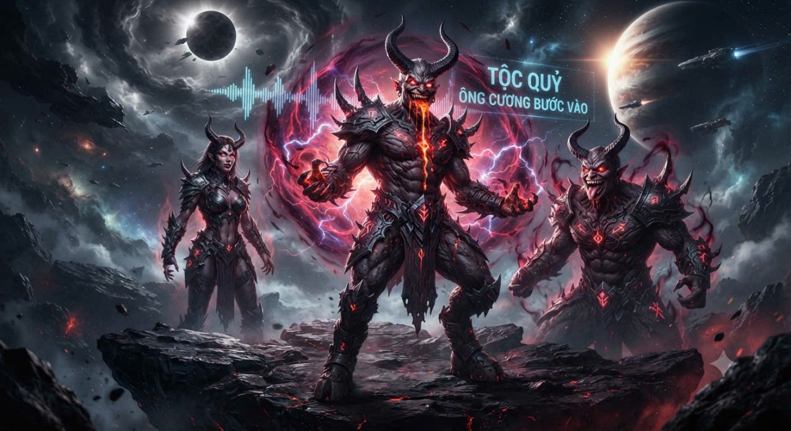

---

Tộc Quỷ là một nhóm sinh vật vừa được xạo lồn ra cách đây không lâu bởi nhà khoa học kiêm xạo lồn chúa Lê Hồng Phong. Ngoại hình: đây là bộ tộc có hình dáng sigma dark dark bruh bruh lồn mao nhất hệ cặc trời, với hai cái sừng chó nhìn cực bắt lồn và nụ cười đĩ dị khiến trứng dái tôi lộn nhào và aura battle, cùng với hai cái chân dê chắc là dùng bị sục cặc chó với cái lưỡi gắn ở miệng mặc dù tôi đang tả cái chân. Nơi sinh sống: đây là bộ tộc vũ trụ bá đĩ nhất cái dái thương hệ chỉ sau người um khi đám đĩ này sống ở khu vực tử thần núm dái âm dương, chúng đã sinh sống ở đó khoản 3,69 tỷ năm và có dân số khoảng 400 000 000 cá thể, chúng phân biệt giới tính rất rõ ràng dù không có vẻ ngoài khác biệt. Hành vi: chúng đã được phát hiện tới trái đất để lan truyền văn hóa bá khí và aura battle nhạc fonk và câu cứt vạn cân ông cương bước vào. Năng lực: chúng đa phần không sử dụng thể lực dù có cơ thể cực kì mạnh mẽ và giga chó, chúng thường sử dụng hào quang trong các cuộc xung đột và miệng có thể khạc ra dung nham.